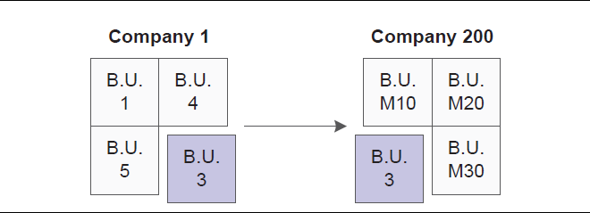
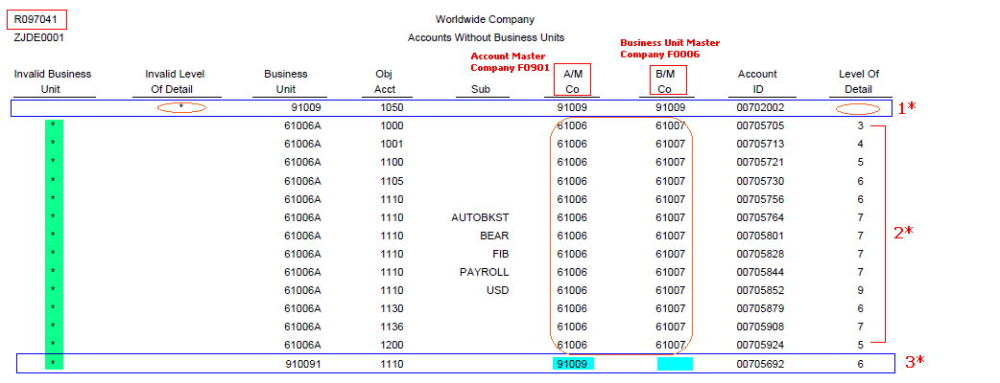
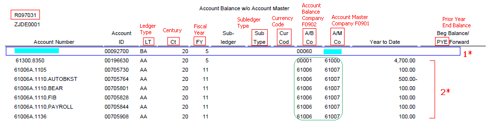
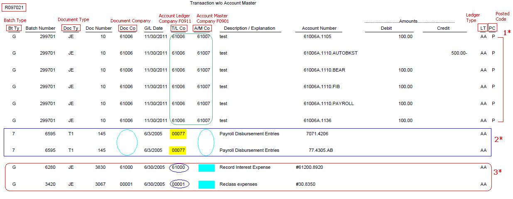

| Purpose |
| Overview of Functionality |
| Scope |
| Details |
| Prerequisites |
| Process |
| Accounts without Business Units (R097041) |
| Overview |
| Setup |
| Reviewing the Report |
| Account Balance without Account Master (R097031) |
| Overview |
| Setup |
| Reviewing the Report |
| Transactions without Account Master (R097021) |
| Overview |
| Setup |
| Reviewing the Report |
| Post Process |
| Frequently Asked Questions |
If your company reorganizes or acquires another business, you might need to move an existing business unit to a different company. You complete this move by changing the company number on the business unit and then updating the F0901, F0911, and F0902 tables with the new company number.
Following graphic illustrates the process of moving Business Unit 3 from Company 1 to Company 200:

This document is intended for Finance Functional users who will be responsible for changing the chart of accounts structure.
- Companies in Balance (R097001) Document 664778.1
- Account Balance to Transactions (R09705) Document 1383948.1
- Intercompany Accounts in Balance (R097011) Document 1383141.1
- Repost Program – Report Mode (R099102) Document 1387474.1
- Accounts without Business Units (R097041)
- Account Balance without Account Master (R097031)
- Transactions without Account Master (R097021)
This order ensures that the company number always originates from the Business Unit Master F0006 table.
The Accounts without Business Units report (R097041) does the following:
Processing Options
Update Tab
1. Company Number Update
Data Selection
You may specify a range of Business Units or Company for better performance results.

1* An account with a blank level of detail is identified by '*' in the Invalid LOD column on the report. Accounts should be assigned a level of detail 3-9.
2* It shows the mismatch of Company field between F0901 and F0006 for Business Unit '61006A'. The value of Company shows as '61007' in F0006 Business Unit Master table, whereas it is '61006' in F0901 Account Master table. When run in final mode, system updates the company number in the F0901 table with the company number in the F0006 table. This discrepancy would be represented by '*' in the Invalid Business Unit column.
3* An account from F0901 having the corresponding business unit missing from F0006 is also identified by '*' in the Invalid MCU column on the report. In this example, Account '910091.1110' from company '91009' has the corresponding Business Unit '910091' missing from F0006 Business Unit Master table, hence showing the F0006 Company as Blank.
The Account Balance without Account Master report (R097031) does the following:
Processing Options
Update Option Tab
1. Company Update
Data Selection
You may specify a range of Business Units or Company for better performance results.

1* Please note the Blank Account Number and Account Master Company from F0901 table. The F0902 table contains a record for '00092700' account id for company '00060' whereas this account does not exist in Account Master F0901 table, hence printing this discrepancy.
2* It shows the mismatch of Company field between F0901 and F0902 for all the given account numbers. The value of Company shows as '61006' in F0902 Account Balance table, whereas it is '61007' in F0901 Account Master table. When run in final mode, system updates the company number in the F0902 table with the company number in the F0901 table.
The Transactions without Account Master report (R097021) does the following:
Processing Options
Update Option Tab
1. Company Update
Data Selection
You may specify a range of Companies for better performance results.

1* It shows the mismatch of Company field between F0901 and F0911 for all the given account numbers. The value of Company shows as '61006' in F0911 Account Ledger table, whereas it is '61007' in F0901 Account Master table. When run in final mode, system updates the company number in the F0911 table with the company number in the F0901 table.
2* Please note the Blank Document Company and Account Master Company from F0901 table. The F0911 table contains records with blank Company hence printing this discrepancy.
3* You may notice the blank Account Master Company from F0901 table only. The F0911 table contains records for the given accounts whereas these account do not exist in Account Master F0901 table, hence printing this discrepancy.
1. Run the following integrity reports again to verify that the process ran without error:
2. Update any necessary Automatic Accounting Instructions (AAIs). For example, any AAI item set up for the "old" company which specifies a business unit that has been changed need to be re-aligned to the new company.
3. Add the appropriate intercompany accounts and modify the intercompany AAIs (ICH and/or ICCC), if necessary.
4. Verify, the Business Unit Security is correct, if necessary.
5. Change any Business Unit Category Codes, wherever appropriate.
6. Change any custom report data selection, wherever appropriate.
Question 1: Are there any special instructions while moving Business Units to a Company with a different Fiscal Date Pattern?
Answer 1: Please follow all the steps mentioned above in sequence. Additionally, it would be required to do the following:
- Companies in Balance (R097001) Document 664778.1
- Account Balance to Transactions (R09705) Document 1383948.1
- Intercompany Accounts in Balance (R097011) Document 1383141.1
Question 2: A Business Unit has been moved to a different company and now both companies have started showing 'out of balance'. Why?
Answer 2: This occurs when the debits and credits for the business unit (which had the company number changed) don't net to zero. To correct this data integrity error, a manual journal entry is required between the business unit's old company and new company retained earnings accounts. Since direct entries to retained earnings accounts cannot be made, you may create subsidiary accounts beneath the existing retained earning accounts and post to them. The batch should be flagged to post out of balance, to prevent further intercompany settlement transactions from being created, which would defeat the purpose of the manual journal entry. Alternatively, you may also set the Intercompany Settlements field to '*' in the general accounting constants prior to posting the batch.
Question 3: Are there any additional steps when moving the business unit to a different company with crossing fiscal years?
Answer 3: The above mentioned process will be the same followed by running the R098201 Annual Close for both companies for each fiscal year, one after another in order to refresh the balance forward amounts. For more information on Annual Close, refer to Document 664688.1.
Question 4: The Transactions without Account Master (R097021) report does not update the Document Company (KCO) field in Account Ledger (F0911) table. Why?
Answer 4: The Company (CO) field in the F0911 is tied to the corresponding account (AID/ANI) and is the company field linked directly to the Business Unit (MCU) of the transaction. The Document Company (KCO) field in the F0911 is related to the company of the transaction. KCO does not have any correlation with either the Company or Business Unit field. KCO does not have any bearing on data integrities except to organize the F0911 entries. Changing the Company of a Business Unit has no repercussion on the value of Document Company.